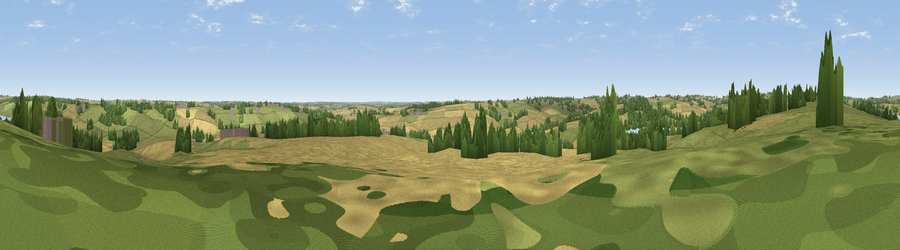

Viewpoint near Teeton
#29161 in England · top 31% of its area beats it · near TeetonWhere it is
The exact computed spot (SP 68975 70825). Click the marker for map links.
The view, rendered

A 360° render of this exact spot computed from the terrain model, tree cover and land cover — summer colours, afternoon light, calibrated against photographs of famous viewpoints. Real trees, hedges and buildings will differ in detail.
The panorama
Grey silhouette: terrain skyline in each direction (720 bearings, Earth curvature and refraction included). Dashed green: skyline with trees (+15 m) and buildings (+8 m) as obstacles. Blue strip: how far the ground is visible on each bearing.
Where the view opens
Wedge length = distance to the farthest visible ground on that bearing (vegetation-aware). Rings at 10, 25 and 50 km.
What fills the view
49% cropland · 38% grassland · 9% woodland · 2% water ·
Angular shares of the visible panorama (visual magnitude), not map area. Landscape diversity 0.47 (0–1 Shannon).
Key numbers
More beautiful places nearby
The staircase of upgrades: each row has a higher view potential than everything closer. Driving times are estimates from straight-line distance, calibrated against real road routing — check an actual route before setting out.
| Place | Direction | Drive | Score |
|---|---|---|---|
| Viewpoint near Long Buckby | SW · 5 km | ~12 min | 45.6 |
| Viewpoint near Haselbech | NNE · 6 km | ~12 min | 47.1 |
| Viewpoint near Cold Ashby | NW · 8 km | ~16 min | 61.7 |
| Viewpoint near Staverton | SW · 17 km | ~29 min | 63.3 |
| Big Hill - Staverton Clump | WSW · 17 km | ~30 min | 68.4 |
| Viewpoint near Northend | WSW · 35 km | ~53 min | 69.7 |
| Viewpoint near Northend | WSW · 35 km | ~53 min | 70.3 |
| Viewpoint near Radway | SW · 38 km | ~57 min | 71.7 |
52.33119, -0.98923 · source: screening · position refined by local search. Computed location — check access rights before visiting.